Celebrating a visionary leader, an exceptional mentor,
and an inspiration to many.
Hon Sunday Etim, JP
Chairman, Mbo Local Government.
Today we celebrate not just a birthday, but a life of impact, excellence, wisdom, and service. Your leadership continues to inspire generations and create meaningful transformation in the lives of many.
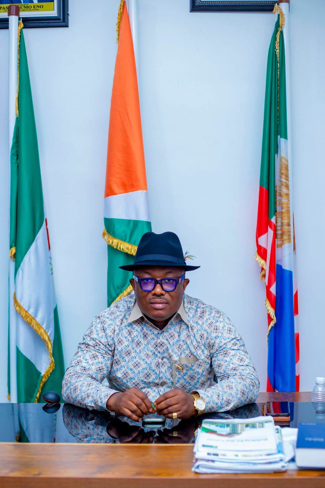
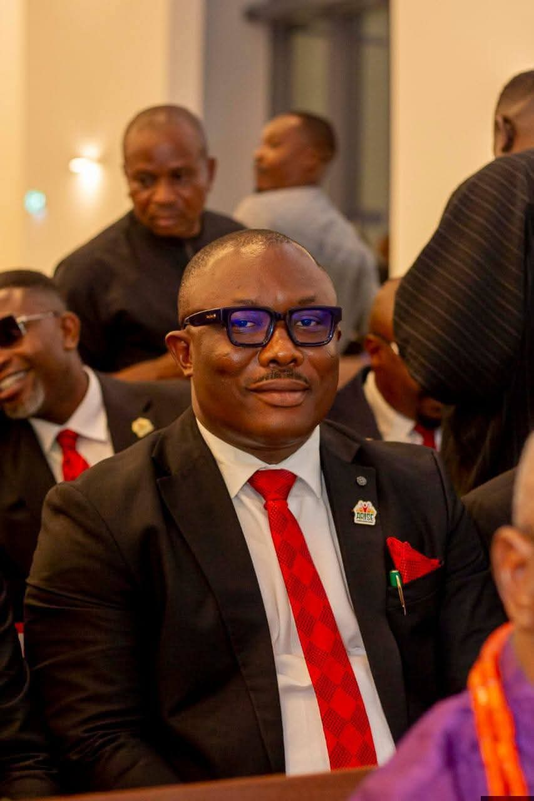
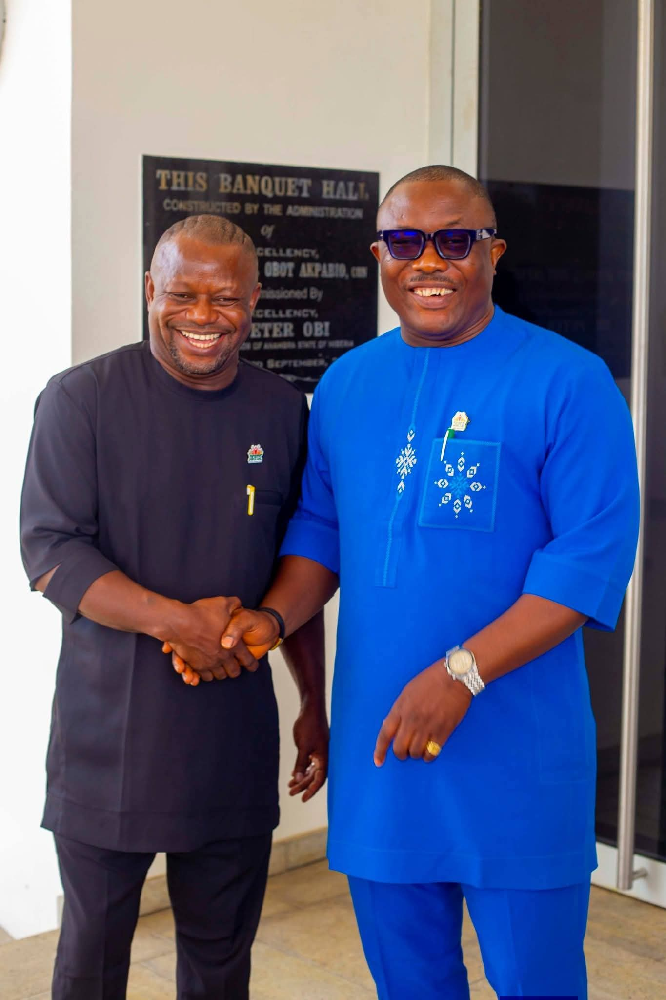
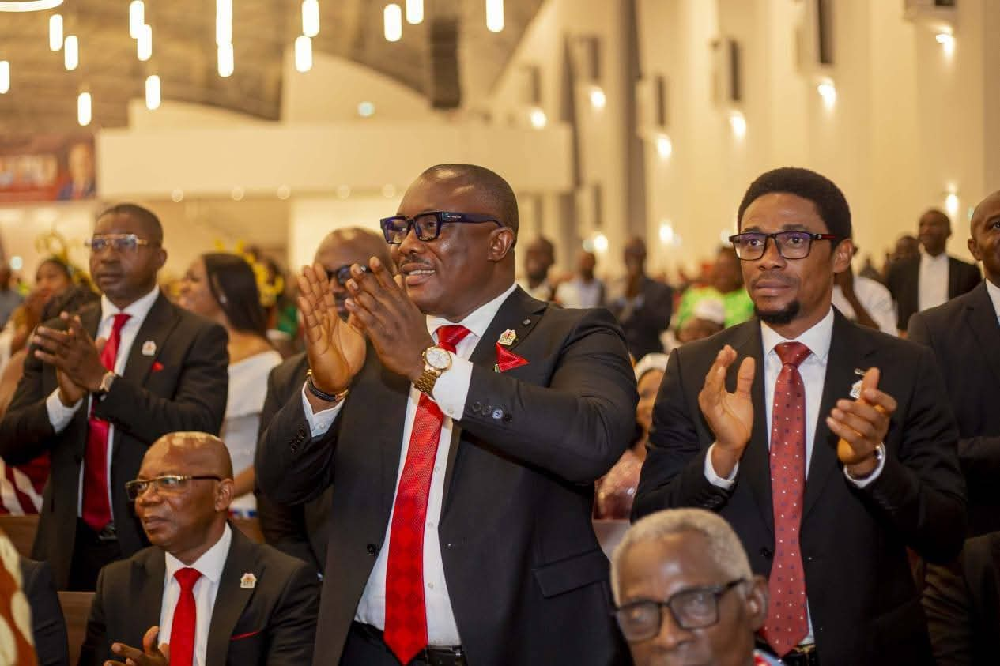
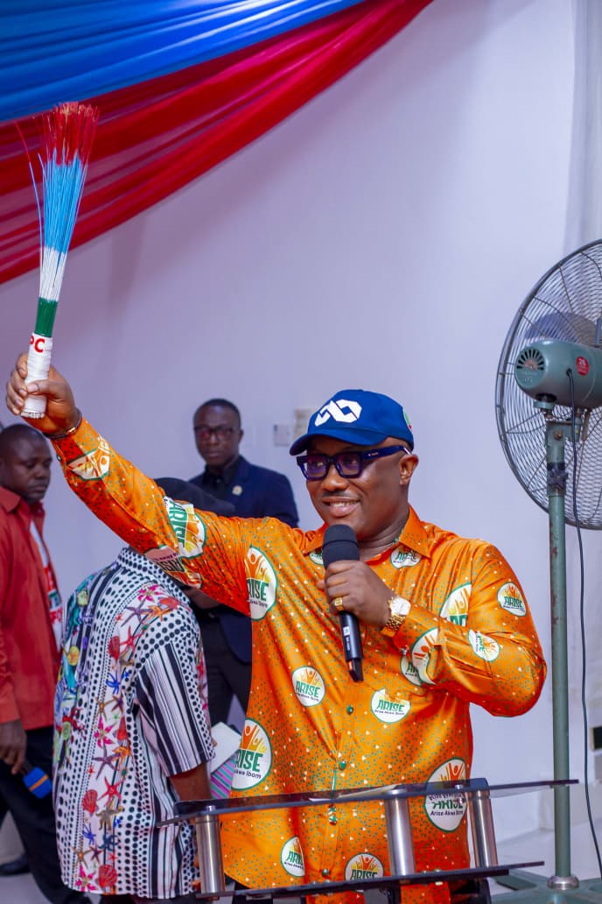
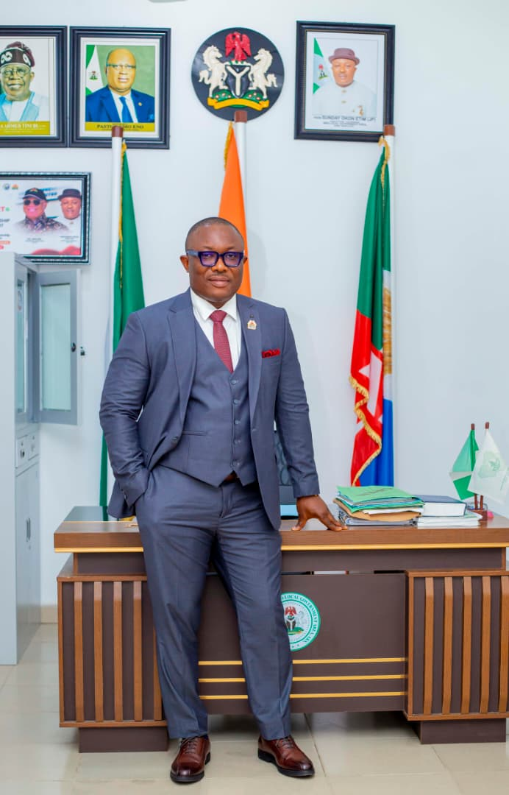
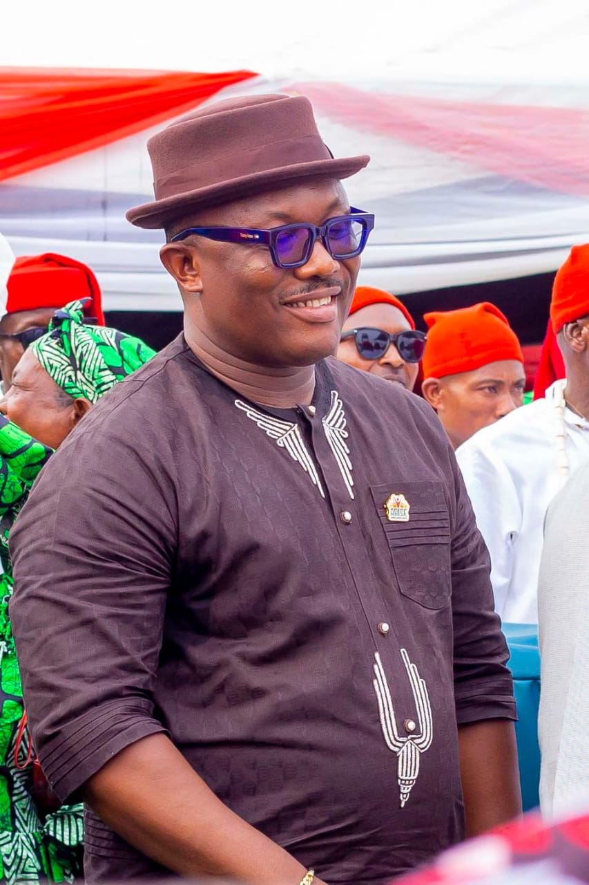
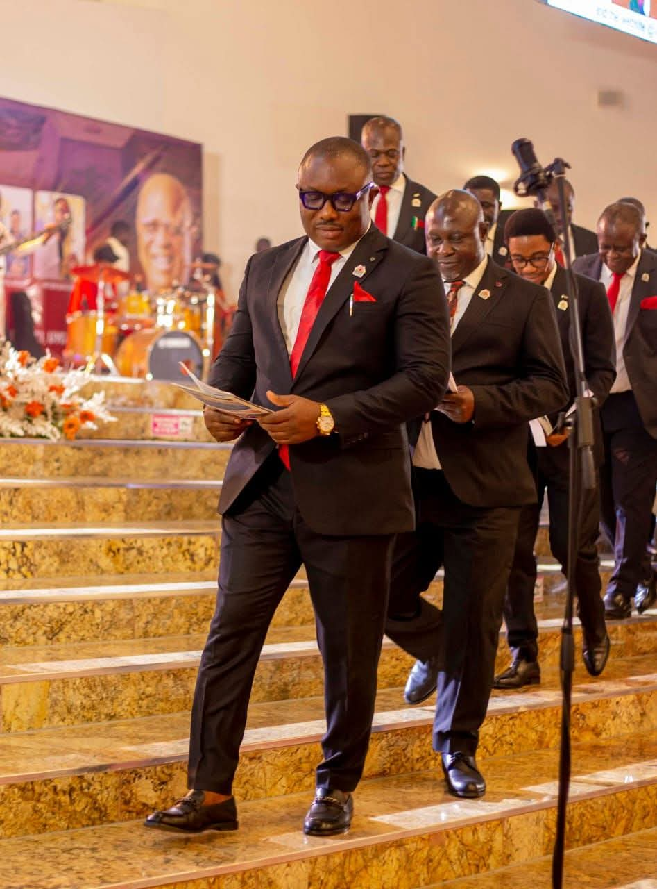
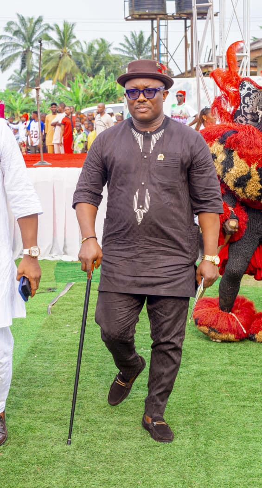
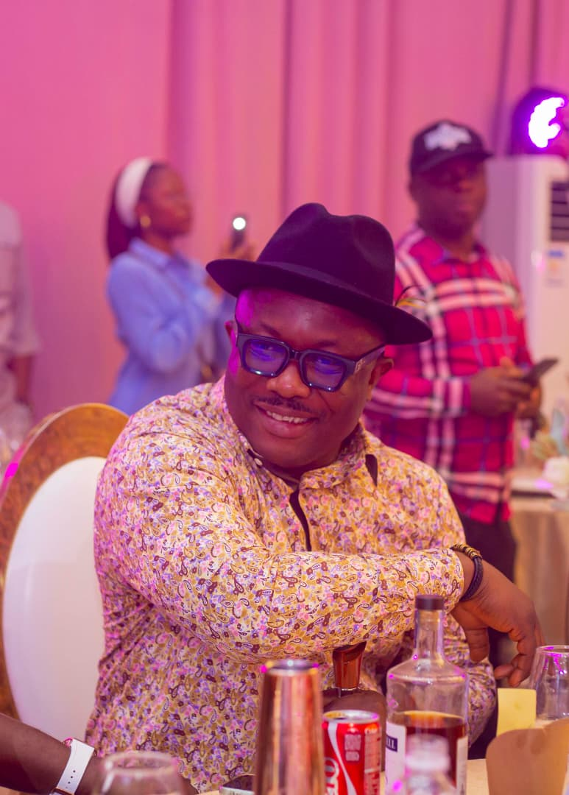
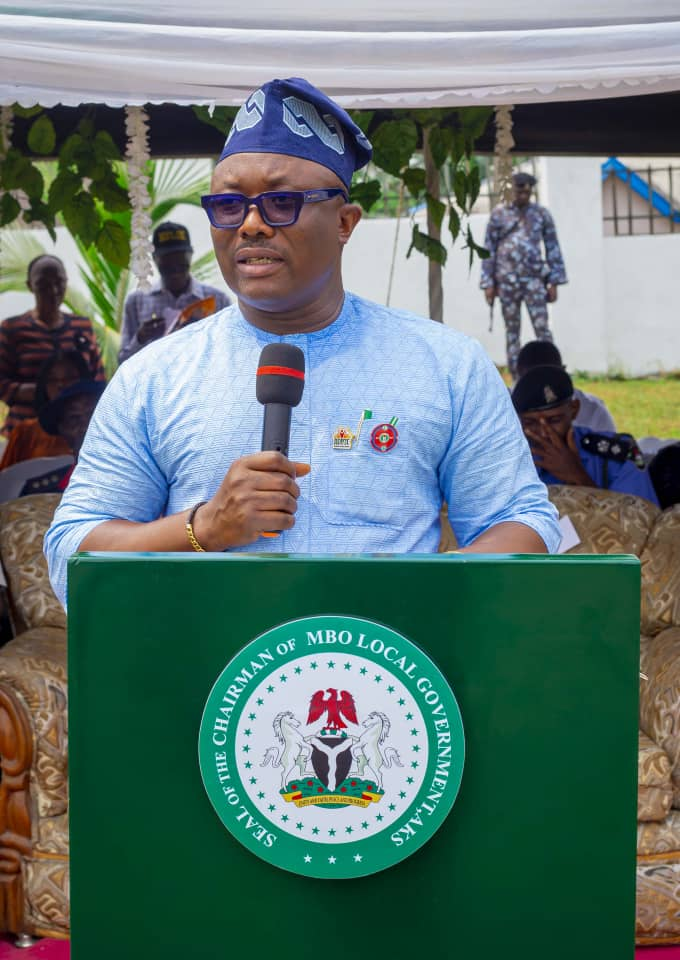
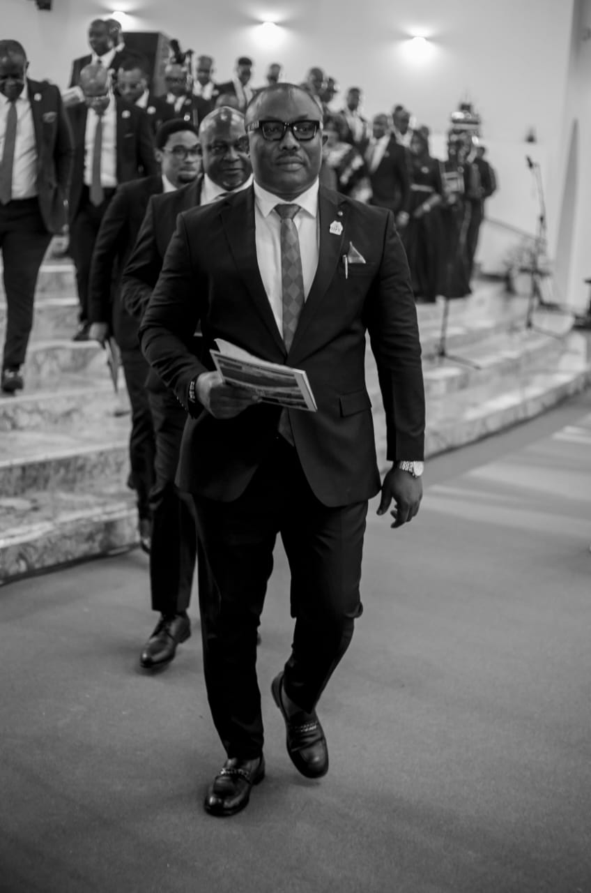
A Journey through time with Chairman
Happy Birthday to a Leader who provides that true leadership starts with a good heart. Your generosity inspires everyone around you. May your day be as bright as the impact you've made.
Happy Birthday to an exceptional leader, a visionary Chairman, and an inspiration to many.
Your leadership, wisdom, and dedication continue to impact lives and shape a brighter future.
May this new year bring you greater strength, peace, happiness, and endless success.

The blessing of the Lord continue to locate you my Boss, my Leader, birthday blessing Sir.
To My Boss And Benefactor.....
Hon Sunday Etim AKA Odiong Okon, JP.
Executive Chairman Of Mbo Local Government.
Happy birthday, my Chairman...
Wishing you all the best ❤️
May the blessings continue to be!
Happy Birth Anniversary To The Man Behind The Podium Of Leadership In Mbo Local Government Council,
Hon. Sunday O. Etim, JP. Your visionary leadership, dedication to grassroots development,
and unwavering commitment to the progress of Mbo LGA continue to inspire hope and confidence among the people.
May this new chapter of your life be filled with greater wisdom, sound health, divine favour, and more remarkable accomplishments in service to humanity.
Wishing you many more fruitful years of impactful leadership and celebrations ahead.
Happy Birthday, My Boss and Big Brother!
Happy Birthday, Hon. Sunday Etim JP
You have a distinctive leadership style; admirable, heartwarming, accommodating, unassuming but result-oriented.
Like a proverbial Dove, you are blessed with an endearing mien, exuding peace, harmony, fidelity, and grace to steady the tide of seemingly clouded weather without ruffling feathers.
You may not be given to bravado and tough talking on the face of challenges that need creative actions, but your approaches and results would always receive widespread applause and acceptability, afterward.
So far, your leadership style has not only aligned with the party's ideal of peace and victory for good governance but also with the Governor's body language and inkling for political tolerance, sociopolitical cohesion, mutual respect/achievement through a peaceful coexistence.
Ride on, sir. The people of Mbo are with you, every step of the way forward!
Congratulations on your new age!
Yak Ábásì Odiong Mbo 🙌
HAPPY BIRTHDAY TO A LEADER WHO INSPIRES AND MOTIVATES OTHERS TO REACH THEIR POTENTIAL !
May your day be as remarkable as your leadership, for you are indeed a Leader with a heart so pure, so rare.
Mr Chairman, you completely rewrote my story. from appointing me into your government to entrusting me with a lots of assignments, you have been a father, a mentor, and a destiny helper, "thus" i pray with absolute gratitude, May God bless you and your family abundantly. .
Sir. furthermore, your commitment to unity, youth empowerment, security, infrastructure, education, healthcare, women inclusion in politics, and youth leadership, with many sharing personal stories of how your administration directly impacted their lives is a top-noch in subnational leadership because of your bold and visionary governance
You are truly a trailblazer leader who redefined what it meant to govern with courage and results.
On this remarkable day of your Birth Anniversary. I wish you long life, good wealth-in-health, God's protection and greater wisdom lead. Happy birthday to an exceptional Leader